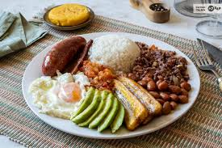

Overview: Colombian cuisine reflects the country's rich cultural diversity. Each region boasts unique dishes influenced by indigenous, Spanish, and African traditions. From hearty stews to tropical fruit delicacies, Colombia is a paradise for food lovers.
Colombian cuisine varies by region. In the Caribbean, fresh seafood and coconut-based dishes dominate. The Andean region is known for hearty meals like ajiaco and empanadas. The Amazon region offers exotic ingredients and indigenous cooking techniques.
Colombian cuisine is a celebration of flavors, history, and community, inviting everyone to experience its delicious diversity.
